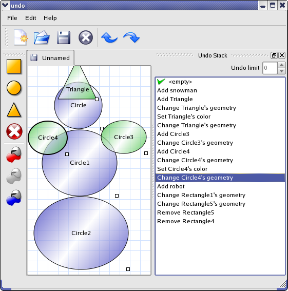

Undo Framework
This example shows Qt's undo framework in action.

Qt's undo framework is an implementation of the Command pattern, which provides advanced undo/redo functionality.
To show the abilities of the framework, we have implemented a small diagram application in which the diagram items are geometric primitives. You can edit the diagram in the following ways: add, move, change the color of, and delete the items.